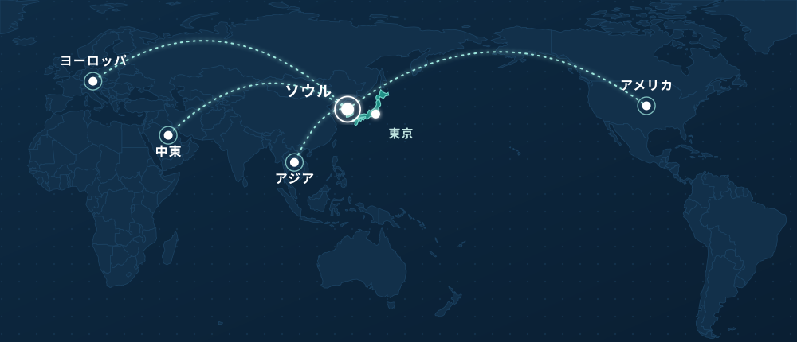

GT-CnTは韓国を拠点とするグローバルなビジネスパートナーです。製品のソーシングと輸出、市場・企業のリサーチ（韓国では自ら現地に足を運んで調査）、責任ある翻訳、そして適切なパートナーとのご紹介まで、お客様のビジネスの行き先に合わせてサポートします。
GT-CnTは製品・情報・言語・ビジネスの領域で活動する、韓国拠点のグローバルなビジネス企業です。私たちの役割は、製品を紹介したり文書を翻訳したりするだけではありません。韓国・日本、そして世界の市場で、お客様が情報を見つけ、理解し、コミュニケーションし、つながることをサポートします。
医薬品・医療機器の輸出 — 優れた韓国製品を海外のバイヤーやビジネスパートナーにつなぎます。
製品・市場リサーチを世界各地で実施。韓国では現地に足を運ぶフィールドリサーチを行います。
医薬品・医療・ビジネス文書のための韓日法務・医療翻訳。
日本の再生医療コンサルティング — 日本での治療に関する情報とコーディネーション支援。
私たちの4つの事業領域は密接につながっています。新しい市場への参入を検討する企業には、市場調査、パートナー調査、製品ソーシング、文書翻訳、ビジネスコミュニケーションが、この順番で必要になることが多くあります。GT-CnTは一部分だけでなく、このプロセス全体を支援します。
私たちのオフィスは韓国のビジネス・医療の中心地からアクセスしやすい場所にあります — お客様がつながる必要のあるメーカーや機関、パートナーの近くです。この現地基盤と現場での調査があるからこそ、GT-CnTは韓国・日本、そして世界のお客様のために活動できます。
ビジネスがどこへ向かっても、国境を越えて通用する製品・情報・言語が必要です。GT-CnTは韓国を拠点に、日本との強いつながりを活かして、アジア、ヨーロッパ、中東、アメリカなど世界のお客様のために活動しています。

契約する前、購入する前、市場に参入する前に、行動につながる情報が必要です。世界各地の製品・企業・市場を調査し、韓国ではチームが自ら現場に足を運び、結果をビジネス上の問いに対する明確な答えとしてまとめます。
GT-CnTは最新のAI翻訳技術の効率性と、専門家による人的レビューを組み合わせた、多段階の品質プロセスを採用しています。
文書の特性に応じて適切なAIモデルを選定し、効率的な初稿翻訳を作成します。
専門翻訳者が用語・文脈・固有名詞・トーン・意味を確認します。
ネイティブレベルのレビューにより、対象言語とビジネス文化に自然に馴染む内容かを確認します。
GT-CnTが納品前に最終確認を行います。
AIは翻訳できます。GT-CnTはその結果に責任を持ちます。
AIの速度に、人間の責任を加える。
企業が抱える課題はひとつだけではありません — サプライヤーを探すこと、市場を理解すること、文書を翻訳すること、外国語で会話すること。GT-CnTはこれらの専門性をひとつにまとめて提供します。
韓国を拠点に、世界のお客様と市場に対応しています。商習慣の大きく異なる韓国と日本については、実務に根ざした深い知見があります。
医薬品、医療機器、美容、ヘルスケア関連製品にわたる事業経験を持っています。
韓日翻訳は当社の中核事業のひとつであり、特に法務・医療分野での経験が豊富です。
単に情報を翻訳するだけではなく、ビジネスに活用できるようリサーチ・整理・伝達を行います。韓国では、チームが自ら現場に足を運びます。
輸出、コンサルティング、翻訳、医療コンサルティングは、お客様のニーズに応じて組み合わせることができます。
すべてのプロジェクトはひとつの疑問から始まります。その疑問を実際の解決策につなげるために、私たちが従う流れをご紹介します。
お客様の目的、対象市場、必要な情報やビジネス上の課題を把握します。
適切な情報源から関連情報を収集・確認します。必要に応じて、現地訪問も行います。
お客様のビジネス目的に沿って情報を整理します。
必要に応じて、企業・サプライヤー・販売代理店・医療機関とのコミュニケーションを仲介します。
必要な文書やコミュニケーションについて、韓日翻訳とローカライズを行います。
合意した範囲内で、コミュニケーションとビジネスプロセスを継続的に支援します。
調達したい製品がある方、現地で調べたい市場がある方、翻訳が必要な文書がある方、日本での医療サービスをご検討中の方 — GT-CnTはお客様のニーズに合わせたソリューションをご提案します。